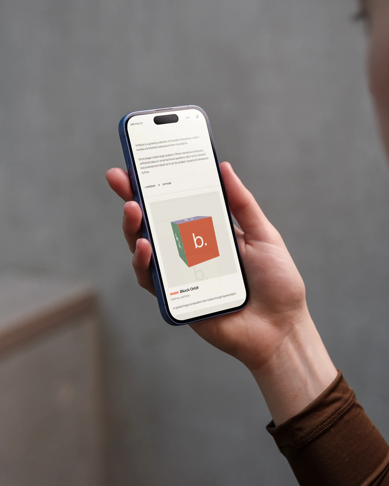
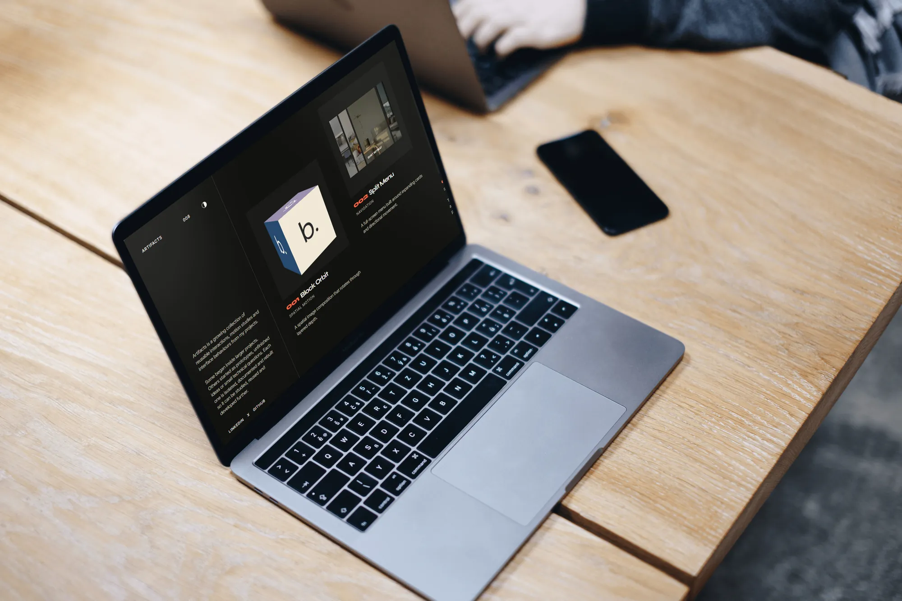
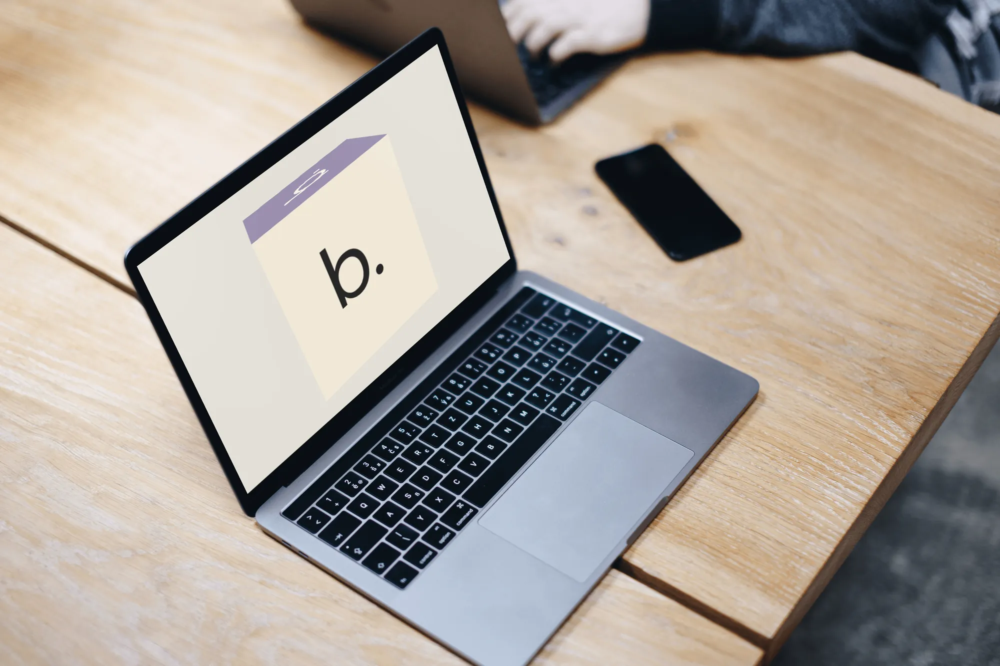
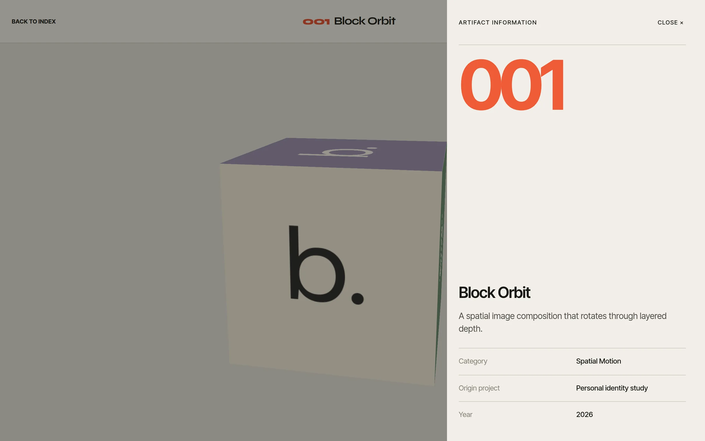
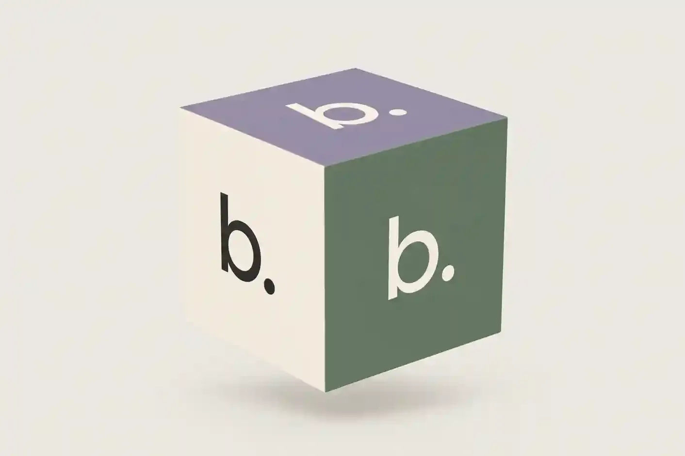
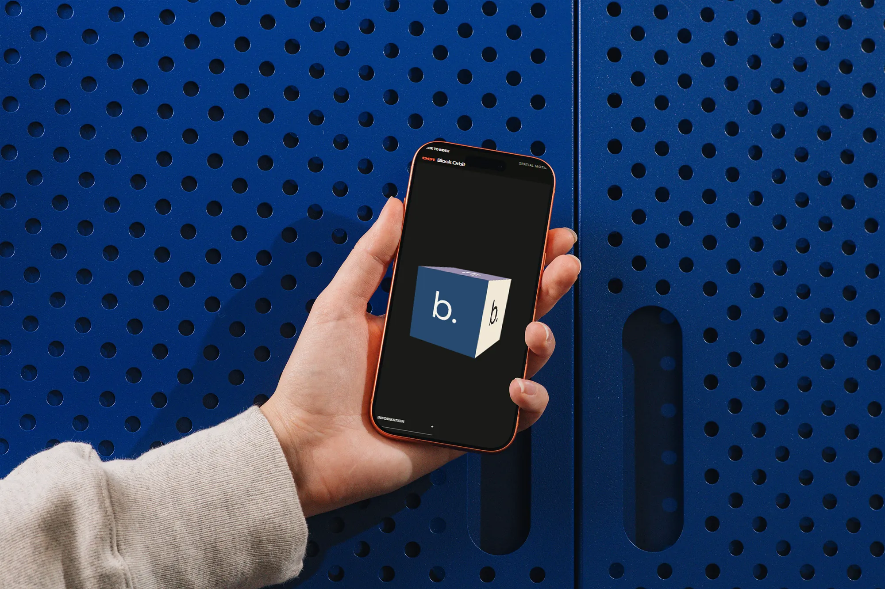

An archive of interactions, taken out of my projects and rebuilt to stand alone.

Context
A lot of my interaction work lives inside larger projects: a full-screen menu in Toby & Tye, album-art motion and a colour system in Spotify Now Playing, scroll and card motion in the Ace Trail redesign. There it depended on each project’s fonts, global styles, data and scroll setup, so none of it could be shown, studied or reused on its own.
Artifacts gives each interaction its own module and its own page, alongside motion studies that began as prototypes or small technical questions. It started with six in September 2026 and holds ten now.
Block Orbit
001
Spatial motion · Personal identity study
Split Menu
002
Navigation · Toby & Tye
Three Image Orbit
003
Spatial motion · Personal identity study
Scroll Cinema
004
Scroll · Personal motion study
Ambient Artwork
005
Pointer motion · Spotify Now Playing
Palette Shift
006
Colour system · Spotify Now Playing
Track Transition
007
State motion · Spotify Now Playing
Spatial Services
008
Timed tabs · Spatial systems study
Scroll Sequence
009
Scroll state · Ace Trail
Card Flip
010
Card motion · Ace Trail
The archive
The index is split in two. A fixed column on the left says what the archive is and holds the theme switch; the collection runs to its right like a contact sheet. A vertical mouse wheel moves it sideways, but only while there’s room to move, so it never swallows a scroll it can’t use. Trackpads keep their own sideways swipe, and the collection takes keyboard focus, so the arrow keys scroll it too.
Each card runs a live version of its artifact rather than a thumbnail, because a still shows what an interaction looks like but not how it moves. Open one and come back, and the index returns to the card you left from.
The index at 1440 × 900, scrolled from Block Orbit to Card Flip.
Theme
The archive follows the system setting until you pick one. The choice is saved, and a short script in the document head applies it before anything renders, so a dark visit never flashes light first.
The colours are a small set of tokens with a value for each theme: a warm off-white or near-black ground, two greys for secondary text, and one orange-red accent, used mostly for the artifact numbers.

Dark: the index on a laptop.

Light: Block Orbit on the same laptop.
Rules
Every artifact is built to the same rules, so each new one fits without changing the ones before it. The registry is one typed file, and every artifact page is generated from it at build time.
Each page shares one frame: the way back to the index, the number and title, the type, and an Information panel with the description, the project it came from and the year. The panel is a modal dialog: focus moves into it and stays there, Escape or a click outside closes it, and focus goes back to the button.
Self-contained
It owns its markup, styles and logic. Styles are SCSS Modules, so nothing leaks into the archive or into another artifact.
Leaves nothing behind
Listeners, animation frames, observers, timers and GSAP contexts are all released when it leaves the page.
Two sizes
A preview that runs on its own inside a card, and a full version with controls on its own page.
Reduced motion
Each one decides what that means: the scroll scene stops pinning, and the menu and track changes happen at once.
Touch as well as pointer
Nothing depends on hover alone, and primary controls keep a 44-pixel touch target.

Block Orbit with its Information panel open.
Block Orbit
Block Orbit began as an identity study: the b. wordmark on the six faces of a cube, in six colours, turning once every 16 seconds. It’s CSS 3D, with GSAP adding a slight tilt toward a mouse pointer.
It stops turning when it’s off screen or the tab is hidden, and with reduced motion it rests at a fixed angle. The same cube became the archive’s share image.

The share image.

Block Orbit on a phone, in dark mode.
Split Menu
From Toby & Tye. Opening it wipes a panel in from the right, fades in the header, then raises the four cards 55 milliseconds apart; closing drops the cards and wipes the panel back out. It’s a native modal dialog, so focus moves to Close, Escape runs the same closing sequence, and focus returns to the button that opened it.
With a mouse, the card under the pointer widens and grows while the others dim. A touch screen has nothing to hover, so there the cards become a vertical list and the one nearest the middle of the screen is highlighted as you scroll.
Opening the menu, moving across the four cards, and closing it.
Scroll Cinema
A muted clip sits in a frame. Scroll, and the section pins while the frame grows to cover the screen, overscanned slightly so no edge shows: over 1.8 screen heights on desktop and 1.15 on narrow screens. It’s a GSAP ScrollTrigger scrub, so it follows the scroll in both directions.
The play button opens the clip in a cinema view with sound: a separate video in a modal dialog that starts where the muted one was. Closing it puts you back where you were on the page. The muted clip plays only while it’s on screen, and with reduced motion the frame doesn’t pin or grow.
Scrolling through the pinned section at 1440 × 900.
From Now Playing
Ambient Artwork, Palette Shift and Track Transition come from my Spotify Now Playing project. Here they run on eight album covers stored with the site instead of Spotify’s API, so there’s no sign-in, no polling and no remote images.
Palette Shift takes the page’s colours from the artwork. Each cover is drawn onto a 32 × 32 canvas and sampled; transparent, very dark and very light pixels are skipped, the average becomes the base colour and the most vivid one the accent. Both are held to a narrow range of brightness so the light text over them stays readable, and each result is cached.
Choosing each of the four covers. Album artwork belongs to its artists and rights holders.
Extracted colours
Back Outside
Base #403936, accent #AA4044
VILLAIN
Base #4B3724, accent #A15436
GLORY II
Base #211F1F, accent #636261
Bang
Base #3E3A2D, accent #9A5633
Track Transition
Changing track looks like one movement, but it runs in phases: preparing, departing, committing, arriving, then idle again. While the next cover loads and its colours are worked out, the current track stays on screen. Then the artwork and text step back for 180 milliseconds, the new track is swapped in, and it arrives in a short stagger, with the title revealed word by word, 26 milliseconds apart.
Each request carries a generation number and cancels the one before it, so pressing Next several times quickly lands on the last track asked for instead of playing every transition in between. With reduced motion the track still changes, just without the staging.
Next three times, then Previous.
Time after the next track is ready
Step back
Artwork drops and fades to 48%; the text fades out
Artwork returns
620 ms, once the new track is swapped in
Title, word by word
420 ms a word, 26 ms apart
Label, artist, album, controls
520 ms each, starting 20 to 220 ms in
Background blooms in
The old colour layer is cleared at 1,080 ms
On a phone
Below 900 pixels the archive becomes a single column of cards, and each artifact page fits the screen with its controls clear of the notch and the browser’s own bars.
Ambient Artwork tilts a cover toward a mouse pointer. On a phone the cover follows your finger instead: tilt, shift and press run on springs, and the drag meets more resistance near the edge. A tap opens the cover full screen; the real element is moved into a viewer and animated from where it was, so it grows out of the page rather than appearing over it.
The index on a 390-pixel-wide phone.
Dragging and tapping Ambient Artwork.
Engineering
Ten live previews on one page add up, especially on a phone. A performance pass in late September cut what the index downloads and how much work each preview does before it’s on screen.
Previews that need artwork wait until they’re close to the viewport, or until a couple of seconds after the page has loaded. Two preview animations that made the browser recalculate every frame were rewritten to use transforms only, so they run on the compositor. Off-screen previews skip rendering, and the analytics script waits until the page has finished loading.
Before
The full 10 MB, 4K clip in the Scroll Cinema card
Album covers at 2.5 MB for all eight
1,200-pixel covers in the colour previews
A Split Menu preview that animated flex-grow
An orbit animated through a custom property
Analytics loaded right after hydration
After
A 6-second, 960 × 540 clip of 290 KB, attached when it’s needed
The same covers at 0.99 MB, the same size
640-pixel copies, about 300 KB for all eight
Boxes placed with translate and scale
Transform-only keyframes
Analytics loaded after the page
Performance
98
Performance
96
Accessibility
100
Best practices
100
SEO
0.9 s
First contentful paint
2.4 s
Largest contentful paint
40 ms
Total blocking time
0
Cumulative layout shift
PageSpeed Insights on the live index, 2 October 2026: one Lighthouse 13.5 run on an emulated Moto G Power over slow 4G. On desktop the index scored 100, 96, 100 and 100. The Scroll Cinema page, the one with the 4K video, scored 99, 95, 100 and 100 on the same phone.
Process
Each artifact starts as something that worked inside a real project, or a question I wanted to answer. I take it out of its source, leaving the fonts, global styles and services behind, and rebuild it to the rules above before it goes into the registry.
The extractions were built with AI coding agents doing much of the typing, against the same rules each time.
Find
An interaction worth keeping, in a project or a prototype.
Extract
Leave the source’s fonts, global styles and services behind.
Rebuild
A full version, and a preview for its card.
Fit the rules
Own styles, clean-up, reduced motion and touch.
Publish
A registry entry, a card and its own page.
Stack
Framework
Next.js 16, App Router
React 19
TypeScript
Styles
SCSS Modules
Motion
GSAP, ScrollTrigger
CSS animation
Web Animations API
Media
next/image, AVIF and WebP
Canvas, for colour sampling
Type
Inter Tight
Syne
Analytics
Google Analytics 4
Hosting
Vercel
Outcome
Ten interactions that only existed inside other projects now stand on their own, each with its own page.
The archive gives me a place to keep interaction work that would otherwise be hard to show, as modules I can bring into the next project without the baggage of the last one.
It’s also the clearest picture of how I approach motion: what it’s for, what it costs on a phone, and what happens when someone would rather not see it.
Interaction design · Motion design · Frontend engineering · Component architecture · Accessibility · Performance
Next project
Now Playing